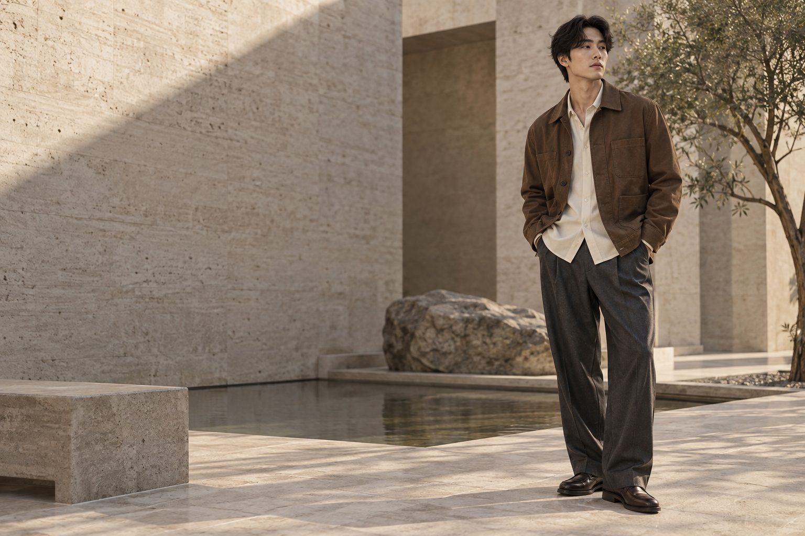

サイズから、ゆっくり選ぶ。
商品詳細の寸法表と選択肢をひとつに。購入前の迷いを少なくする設計です。

LESS NOISE. MORE YOU.
柔らかな色、肩の力が抜けるシルエット。
街の気配に溶け込みながら、どこか自分らしい。
そんな一着を探す、架空のセレクトストアです。
CURATED ESSENTIALS
3 ITEMS / CONCEPT COLLECTION
全商品・価格・素材は仮設定です。
3点の商品
該当する商品がありません。キーワードやカテゴリを変えてください。
WARDROBE NOTES / 01
ブラウン、アイボリー、チャコール。
近い温度の色を重ねて、シンプルな服に奥行きを。
ジャケットの中には軽やかなシャツを。
ボトムには余白を残して、歩く日にも心地よいバランスへ。
AIによるスタイリングイメージ。実際の商品の写真ではありません。
商品詳細の寸法表と選択肢をひとつに。購入前の迷いを少なくする設計です。
条件をガイドにまとめています。正式な条件は運営者確認後に掲載します。
ショッピングガイド ↗店舗案内は公開前の設定欄です。実在する店舗・住所・地図は掲載していません。